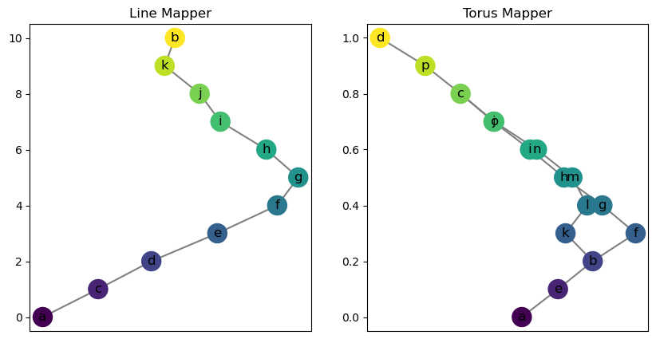
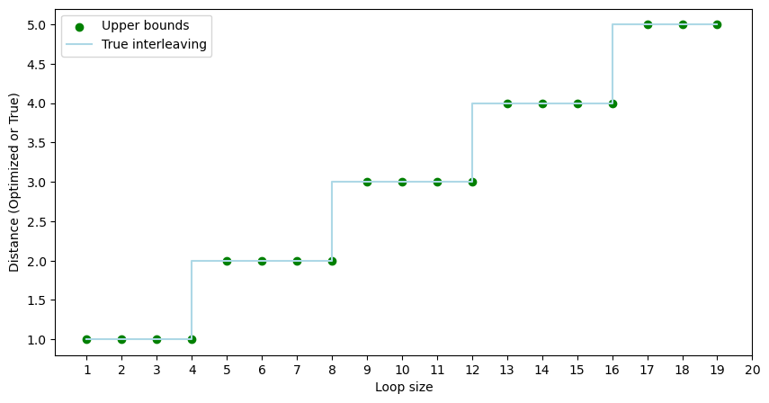
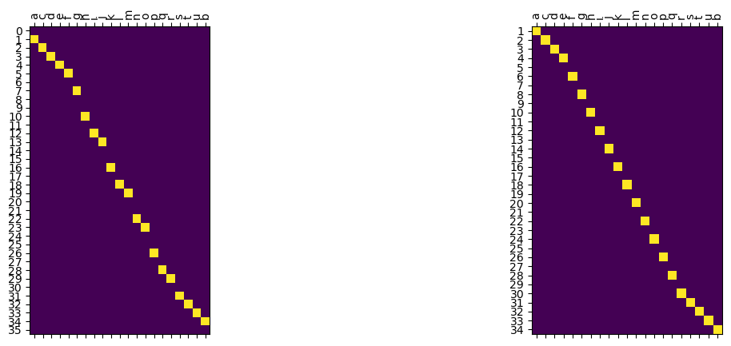
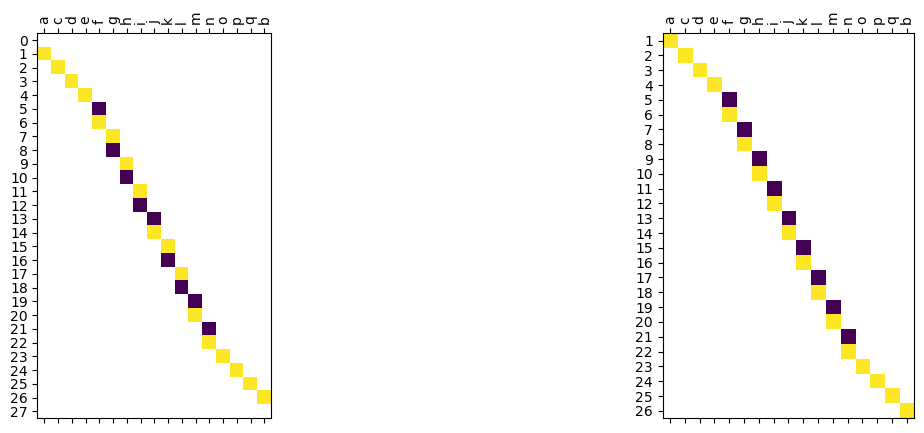
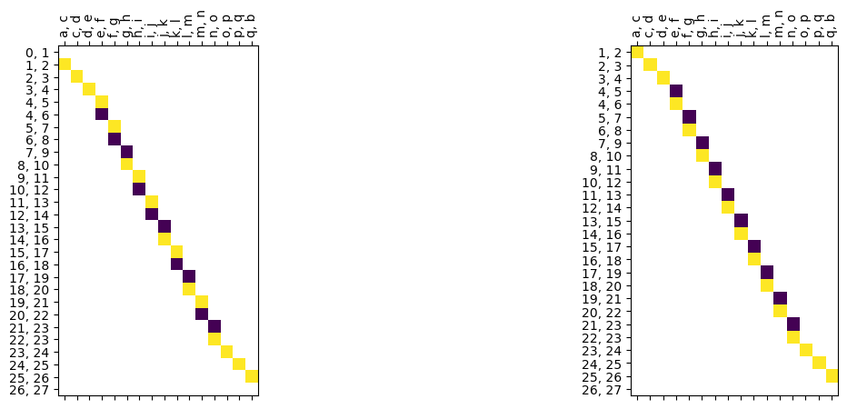
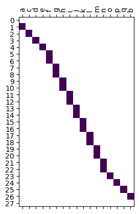
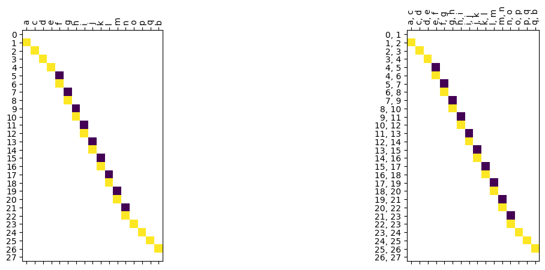
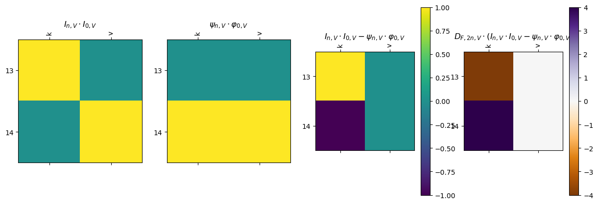
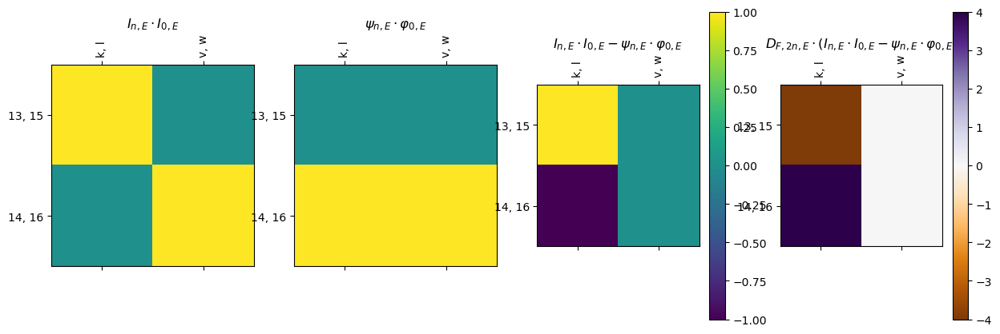
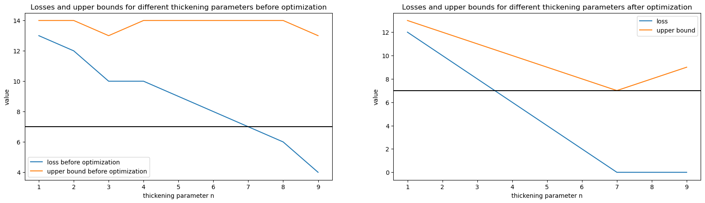

[2]:
%reload_ext autoreload
%autoreload 2
[3]:
from cereeberus import ReebGraph, MapperGraph, Interleave
import cereeberus.data.ex_mappergraphs as ex_mg
import cereeberus.distance.ilp_torus_line as ilp_tl
import cereeberus.distance.ilp as ilp
import matplotlib.pyplot as plt
import math
section hyperlink
Section 3: Go here!!
This notebook aims to find the the optimized loss function for a line mapper and a loop mapper over multiple iterations. Also the loop size of the mappers are varied to test out the optimization.
Section 1: Line and Loop Mapper Visualization
[4]:
# display the line and loop mapppers from ex_mappergraphs.py
M1 = ex_mg.line(0,10, seed=10)
M2 = ex_mg.torus(0,2,8,10, seed=10)
# plot these two mappers as subplots
fig, axs = plt.subplots(1,2, figsize=(10,5))
M1.draw(ax = axs[0])
axs[0].set_title('Line Mapper')
M2.draw(ax = axs[1])
axs[1].set_title('Torus Mapper')
[4]:
Text(0.5, 1.0, 'Torus Mapper')

Section 2: Loss Function Optimization with ILP for different loop sizes and thicknesses
We will try to find the optimized loss function for the line and loop mapper over different values of n.
[5]:
best_loss_dict = {}
for n in range(4, 23): # corresponds to loop sizes of 1 to 19
a, b, c, d = 0, 2, n, n+2
print (f"running for n={n}")
line = ex_mg.line(a,d, seed=10)
torus = ex_mg.torus(a,b,c,d, seed=10)
losses_before, losses_after = ilp_tl.run_optimization_multi_n(line, torus, range(1,n//4+1))
ub_before, ub_after = [num + i for i, num in enumerate(losses_before, start=1)], [num + i for i, num in enumerate(losses_after, start=1)]
# plt.plot(range(1,n//2), ub_before, label=f'Before n={n}')
# plt.plot(range(1,n//2), ub_after, label=f'After n={n}')
best_loss_dict[n] = min(ub_after)
running for n=4
running for n=5
running for n=6
running for n=7
running for n=8
running for n=9
running for n=10
running for n=11
running for n=12
running for n=13
running for n=14
running for n=15
running for n=16
running for n=17
running for n=18
running for n=19
running for n=20
running for n=21
running for n=22
[6]:
c_val = list(best_loss_dict.keys())
loop_size = [i-3 for i in c_val] # loop size is c - b - 1
upper_bounds = list(best_loss_dict.values())
# true interleaving
true_int = [math.ceil(i/4) for i in loop_size]
plt.figure(figsize=(10,5))
plt.scatter(loop_size, upper_bounds, color='green')
plt.step(loop_size, true_int, color='lightblue')
plt.xticks(range(1,21))
plt.legend(['Upper bounds', 'True interleaving'])
plt.xlabel('Loop size')
plt.ylabel('Distance (Optimized or True)')
[6]:
Text(0, 0.5, 'Distance (Optimized or True)')

Section 3: See how the assignment change for different values of n
[7]:
line = ex_mg.line(0,20, seed=10)
torus = ex_mg.torus(0,2,18, 20, seed=10) # loop size is 15
# create an interleaving object
myInt = Interleave(torus, line, n = 1, initialize_random_maps= True, seed=1)
# optimize the interleaving
maps, loss = ilp.solve_ilp(myInt)
# make subplots
fig, axs = plt.subplots(1,2, figsize=(15,5))
# psi map before optimization
myInt.psi('0', 'V').draw(ax = axs[0])
# psi map after optimization
maps['Psi_0_V'].draw(ax = axs[1])
print(f"loss before optimization: {myInt.loss()}")
print(f"loss after optimization: {loss}")
loss before optimization: 7.0
loss after optimization: 6.0

[8]:
line = ex_mg.line(0,16, seed=10)
torus = ex_mg.torus(0,2,14,16, seed=10) # loop size is 11
# create an interleaving object
myInt = Interleave(torus, line, n = 1, initialize_random_maps= True, seed=1)
# optimize the interleaving
maps, loss = ilp.solve_ilp(myInt)
print(f"loss before optimization: {myInt.loss()} and loss after optimization: {loss}")
loss before optimization: 5.0 and loss after optimization: 4.0
[9]:
fig, axs = plt.subplots(1,2, figsize=(15,5))
# psi map before optimization (vertex)
myInt.psi('0', 'V').draw(ax = axs[0], filltype='nan')
# psi map after optimization (vertex)
maps['Psi_0_V'].draw(ax = axs[1], filltype='nan')
fig, axs = plt.subplots(1,2, figsize=(15,5))
# psi map before optimization (edge)
myInt.psi('0', 'E').draw(ax = axs[0], filltype='nan')
# psi map after optimization (edge)
maps['Psi_0_E'].draw(ax = axs[1], filltype='nan')
<class 'numpy.ndarray'>
<class 'numpy.ndarray'>
<class 'numpy.ndarray'>
<class 'numpy.ndarray'>
[9]:
<Axes: >


[10]:
newInt = Interleave(torus, line, n = 1, initialize_random_maps= False)
newInt.psi('0', 'V').draw(filltype='nan')
<class 'numpy.ndarray'>

[11]:
phi_dict = {'0': {'V': maps['Phi_0_V'], 'E': maps['Phi_0_E']}, 'n': {'V': maps['Phi_n_V'], 'E': maps['Phi_n_E']}}
psi_dict = {'0': {'V': maps['Psi_0_V'], 'E': maps['Psi_0_E']}, 'n': {'V': maps['Psi_n_V'], 'E': maps['Psi_n_E']}}
newInt.set_interleaving_maps(phi_dict, psi_dict)
# plot psi vertex and edge maps as subplots
fig, axs = plt.subplots(1,2, figsize=(15,5))
newInt.psi('0', 'V').draw(ax = axs[0],filltype='nan')
newInt.psi('0', 'E').draw(ax = axs[1],filltype='nan')
<class 'numpy.ndarray'>
<class 'numpy.ndarray'>
[11]:
<Axes: >

[12]:
newInt.loss(verbose=True)
[0.0, 0.0, 0.0, 0.0, 0.0, 0.0, 4.0, 0.0, 4.0, 0.0]
[12]:
4.0
We see that the loss is 4 for the triangles F-G-F (vertex and edge). These are the torus-line-torus maps
[13]:
newInt.loss_by_block(verbose=True)
[0.0, 0.0, 0.0, 0.0, 1.0, 2.0, 3.0, 4.0, 4.0, 3.0, 2.0, 1.0, 0.0, 0.0, 0.0, 0.0, 0.0]
[13]:
4.0
See that the loss increases inside the loop of the torus and it is maximum at the middle of the loop
[14]:
trianlge_loss_vertex = newInt.triangle(start_graph='F', obj_type='V', draw=True, returntype='dist', func_val=8)
# max value is at 8 for vertex

[15]:
taingle_loss_edge = newInt.triangle(start_graph='F', obj_type='E', draw=True, returntype='dist', func_val=8)
# max value is at 7 or 8 for edge

Interleaving distance is 3. Hence the Loss should have been 2. But it is double.
Relationship between the thickening parameter and the optimized loss function/upper bound
[16]:
a = 0
b = 2
c = 30 # loop size is 28
d = 32
for i in range(1, 10):
losses_dict[f"losses_{i}"] = solver_iter.run_optimization_torus_line(a, b, c, d, i, 1)
# Save to a text file
with open("lt_losses_0_2_30_32_1.txt", "w") as file:
for key, value in losses_dict.items():
file.write(f"{key}: {value}\n")
---------------------------------------------------------------------------
NameError Traceback (most recent call last)
Cell In[16], line 7
4 d = 32
6 for i in range(1, 10):
----> 7 losses_dict[f"losses_{i}"] = solver_iter.run_optimization_torus_line(a, b, c, d, i, 1)
9 # Save to a text file
10 with open("lt_losses_0_2_30_32_1.txt", "w") as file:
NameError: name 'solver_iter' is not defined
[ ]:
# Plot the results
plt.figure(figsize=(20, 5))
plt.subplot(121)
plt.plot(range(1, 10), [losses_dict[f"losses_{i}"][0][0] for i in range(1, 10)], label="loss before optimization")
plt.plot(range(1, 10), [losses_dict[f"losses_{i}"][0][0]+i for i in range(1, 10)], label="upper bound before optimization")
plt.axhline(y = 7, color = 'k', linestyle = '-')
plt.xlabel("thickening parameter n")
plt.ylabel("value")
plt.legend()
plt.title("Losses and upper bounds for different thickening parameters before optimization")
plt.subplot(122)
plt.plot(range(1, 10), [losses_dict[f"losses_{i}"][1][0] for i in range(1, 10)], label="loss")
plt.plot(range(1, 10), [losses_dict[f"losses_{i}"][1][0]+i for i in range(1, 10)], label="upper bound")
plt.axhline(y = 7, color = 'k', linestyle = '-')
plt.xlabel("thickening parameter n")
plt.ylabel("value")
plt.legend()
plt.title("Losses and upper bounds for different thickening parameters after optimization")
plt.show()

How does the loss change with change of loop size?
[ ]:
a = 0
b = 2
n =1
for i in range(4, 50):
c = i
d = i+2
losses_dict[f"losses_{i}"] = solver_iter.run_optimization_torus_line(a, b, c, d, n, 1)
# Save to a text file
with open("lt_losses_0_2_x_x+2_1.txt", "w") as file:
for key, value in losses_dict.items():
file.write(f"{key}: {value}\n")
---------------------------------------------------------------------------
ValueError Traceback (most recent call last)
File ~/anaconda3/envs/interleavingenv/lib/python3.12/site-packages/networkx/drawing/layout.py:480, in spring_layout(G, k, pos, fixed, iterations, threshold, weight, scale, center, dim, seed)
479 if len(G) < 500: # sparse solver for large graphs
--> 480 raise ValueError
481 A = nx.to_scipy_sparse_array(G, weight=weight, dtype="f")
ValueError:
During handling of the above exception, another exception occurred:
KeyboardInterrupt Traceback (most recent call last)
Cell In[9], line 8
6 c = i
7 d = i+2
----> 8 losses_dict[f"losses_{i}"] = solver_iter.run_optimization_torus_line(a, b, c, d, n, 1)
10 # Save to a text file
11 with open("lt_losses_0_2_x_x+2_1.txt", "w") as file:
File ~/Library/CloudStorage/OneDrive-MichiganStateUniversity/Documents/Research/Projects/Interleaving_to_ML/ceREEBerus/cereeberus/cereeberus/distance/ilp_solver_iterations.py:41, in run_optimization_torus_line(a, b, c, d, n, num_iter)
38 M2 = ex_mg.torus(a,b,c,d, seed=loop_seed)
40 # generate an interleaving of the two mapper graphs
---> 41 myInt = Interleave(M1, M2, n = n, initialize_random_maps=True, seed = loop_seed)
43 # calculate the loss before optimization
44 loss_before = myInt.loss()
File ~/Library/CloudStorage/OneDrive-MichiganStateUniversity/Documents/Research/Projects/Interleaving_to_ML/ceREEBerus/cereeberus/cereeberus/distance/interleave.py:190, in Interleave.__init__(self, F, G, n, initialize_random_maps, seed)
188 for i in range(len(vert_set)):
189 for j in range(i+1, len(vert_set)):
--> 190 D_i[i, j] = M.thickening_distance(vert_set[i], vert_set[j])
191 D_i[j, i] = D_i[i, j]
192 block_D[f_i] = LM( rows = vert_set, cols = vert_set,array = D_i)
File ~/Library/CloudStorage/OneDrive-MichiganStateUniversity/Documents/Research/Projects/Interleaving_to_ML/ceREEBerus/cereeberus/cereeberus/reeb/reebgraph.py:235, in ReebGraph.thickening_distance(self, u, v)
233 # For each difference, build the slice and see if the two vertices are in the same connected component
234 for n in diff:
--> 235 S = self.slice(a-n, a+n, type = 'closed')
236 try:
237 nx.shortest_path(S.to_undirected(), u, v)
File ~/Library/CloudStorage/OneDrive-MichiganStateUniversity/Documents/Research/Projects/Interleaving_to_ML/ceREEBerus/cereeberus/cereeberus/reeb/reebgraph.py:589, in ReebGraph.slice(self, a, b, type, verbose)
586 H = ReebGraph()
588 for v in v_list:
--> 589 H.add_node(v, self.f[v])
591 for e in e_dict:
592 if e[0] in v_list and e[1] in v_list:
593 # The edge is entirely in the set, so both vertices are already there
File ~/Library/CloudStorage/OneDrive-MichiganStateUniversity/Documents/Research/Projects/Interleaving_to_ML/ceREEBerus/cereeberus/cereeberus/reeb/reebgraph.py:311, in ReebGraph.add_node(self, vertex, f_vertex, reset_pos)
308 self.f[vertex] = f_vertex
310 if reset_pos:
--> 311 self.set_pos_from_f()
File ~/Library/CloudStorage/OneDrive-MichiganStateUniversity/Documents/Research/Projects/Interleaving_to_ML/ceREEBerus/cereeberus/cereeberus/reeb/reebgraph.py:490, in ReebGraph.set_pos_from_f(self, seed, verbose)
488 self.pos_f = {}
489 else:
--> 490 pos = nx.spring_layout(self, seed = seed)
491 self.pos = pos
493 self.pos_f = {}
File <class 'networkx.utils.decorators.argmap'> compilation 4:4, in argmap_spring_layout_1(G, k, pos, fixed, iterations, threshold, weight, scale, center, dim, seed)
2 import collections
3 import gzip
----> 4 import inspect
5 import itertools
6 import re
File ~/anaconda3/envs/interleavingenv/lib/python3.12/site-packages/networkx/drawing/layout.py:495, in spring_layout(G, k, pos, fixed, iterations, threshold, weight, scale, center, dim, seed)
493 nnodes, _ = A.shape
494 k = dom_size / np.sqrt(nnodes)
--> 495 pos = _fruchterman_reingold(
496 A, k, pos_arr, fixed, iterations, threshold, dim, seed
497 )
498 if fixed is None and scale is not None:
499 pos = rescale_layout(pos, scale=scale) + center
File <class 'networkx.utils.decorators.argmap'> compilation 12:4, in argmap__fruchterman_reingold_9(A, k, pos, fixed, iterations, threshold, dim, seed)
2 import collections
3 import gzip
----> 4 import inspect
5 import itertools
6 import re
File ~/anaconda3/envs/interleavingenv/lib/python3.12/site-packages/networkx/drawing/layout.py:551, in _fruchterman_reingold(A, k, pos, fixed, iterations, threshold, dim, seed)
549 np.clip(distance, 0.01, None, out=distance)
550 # displacement "force"
--> 551 displacement = np.einsum(
552 "ijk,ij->ik", delta, (k * k / distance**2 - A * distance / k)
553 )
554 # update positions
555 length = np.linalg.norm(displacement, axis=-1)
File ~/anaconda3/envs/interleavingenv/lib/python3.12/site-packages/numpy/core/einsumfunc.py:1001, in _einsum_dispatcher(out, optimize, *operands, **kwargs)
997 path = ['einsum_path'] + path
998 return (path, path_print)
-> 1001 def _einsum_dispatcher(*operands, out=None, optimize=None, **kwargs):
1002 # Arguably we dispatch on more arguments than we really should; see note in
1003 # _einsum_path_dispatcher for why.
1004 yield from operands
1005 yield out
KeyboardInterrupt:
[ ]:
# Plot the results
def compute_loss_dict_diff_loopsize(largest_loop, n):
a = 0
b = 2
c = range(4, largest_loop)
losses_dict = {}
for i in c:
losses_dict[f"losses_{i}"] = solver_iter.run_optimization_torus_line(a, b, i, i+2, n, 1)
return losses_dict
def plot_fig_diff_loopsize(largest_loop, n):
losses_dict = compute_loss_dict_diff_loopsize(largest_loop, n)
plt.figure(figsize=(20, 5))
plt.subplot(121)
plt.step(range(2, largest_loop-2), [losses_dict[f"losses_{i}"][0][0] for i in range(4, largest_loop)], label="loss before optimization")
plt.step(range(2, largest_loop-2), [losses_dict[f"losses_{i}"][0][0]+n for i in range(4, largest_loop)], label="upper bound before optimization")
plt.xticks(range(2, largest_loop-2))
plt.yticks(range(int(min([losses_dict[f"losses_{i}"][0][0] for i in range(4, largest_loop)])),
int(max([losses_dict[f"losses_{i}"][0][0]+i for i in range(4, largest_loop)])) + 1))
plt.step(range(2, largest_loop-2), [math.ceil(i/4) for i in range(2, largest_loop-2)], label="true interleaving")
plt.xlabel("loop size")
plt.ylabel("value")
plt.legend()
plt.title("Losses and upper bounds for different loop sizes before optimization")
plt.subplot(122)
plt.step(range(2, largest_loop-2), [losses_dict[f"losses_{i}"][1][0] for i in range(4, largest_loop)], label="loss")
plt.step(range(2, largest_loop-2), [losses_dict[f"losses_{i}"][1][0]+n for i in range(4, largest_loop)], label="upper bound")
plt.xticks(range(2, largest_loop-2))
plt.yticks(range(int(min([losses_dict[f"losses_{i}"][1][0] for i in range(4, largest_loop)])),
int(max([losses_dict[f"losses_{i}"][1][0]+i for i in range(4, largest_loop)])) + 1))
plt.step(range(2, largest_loop-2), [math.ceil(i/4) for i in range(2,largest_loop-2)], label="true interleaving")
plt.xlabel("loop size")
plt.ylabel("value")
plt.legend()
plt.title("Losses and upper bounds for different loop sizes after optimization")
plt.show()